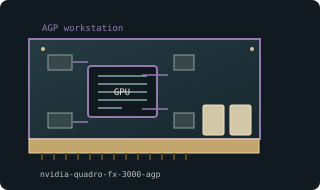

[ WORKSTATION GRAPHICS CARDS // IDENTIFIED COMPONENT ]
NVIDIA Quadro FX 3000 256 MB AGP
NV35GL workstation GPU, 2003. This entry describes one identifiable model or reference configuration; related products and OEM variants are distinguished below.

MODEL / VARIANT: Professional NV35GL board, not a GeForce FX 5900 Ultra despite related silicon. App certification is limited to supported historical driver/software combinations.
Recorded specifications
| Cataloged product | NVIDIA Quadro FX 3000 256 MB AGP |
|---|---|
| Generation / core | NV35GL workstation GPU, 2003 |
| Core & memory | NV35GL; 256 MB DDR on a 256-bit interface; 400 MHz reference core; certified Quadro driver generation. |
| Host interface & I/O | AGP 8x; dual DVI-I and stereo connector on reference design; verify OEM power connector and bracket. |
| Variant boundary | Professional NV35GL board, not a GeForce FX 5900 Ultra despite related silicon. App certification is limited to supported historical driver/software combinations. |
| Archival identification | Record complete part number, PCB revision, BIOS/firmware, device/subsystem IDs, driver version, adapters, condition, and source-document edition. |
Compatibility, service & archival notes
OEM/HP versions may change output bracket and firmware; identify exact product number before reuse.
Record PCI IDs and VBIOS; inspect DVI/stereo connectors and cooler; retain stereo hardware and driver media. Check AGP voltage and workstation airflow.
- Check signaling, slot keying, lane width, power pinout, board length, case clearance, airflow, and PSU requirements for the exact item.
- Use drivers for the device ID and target OS; preserve installer/firmware copies and record their source before updates.
- Do not power hardware with corrosion, cracks, damaged connectors, obstructed cooling, or suspected shorts; document condition before bench testing.
Manufacturer, model & standards sources
- NVIDIA Quadro legacy driver archiveModel-specific product or interface reference; compare with the physical label and exact board revision.
- Quadro FX 3000 model specificationsModel-specific product or interface reference; compare with the physical label and exact board revision.
- Intel AGP specification archiveModel-specific product or interface reference; compare with the physical label and exact board revision.
Reference specifications do not supersede the board vendor manual and nameplate. Performance figures are vendor claims unless identified as measured results.